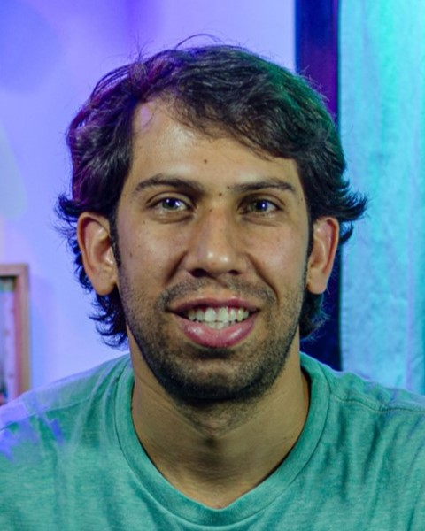

Ruben Villasmil | WDD 130
Hello! My name is Ruben Villasmil, I'm from Argentina, I love the beach, watch documentarys. Im married with an amazing woman. We have to kids, 4 and 5 years old. really enjoy traveling, discovering interesting places, going on walks with my family, attending concerts, among other things.